공인중개사-1차 (2006-10-29 기출문제)
1과목: 부동산학개론
1. 일반적으로 부동산의 개념은 물리적, 경제적, 사회적, 법ㆍ제도적 개념으로 나눌 수 있다. 부동산의 경제적 개념과 거리가 먼 것은?
- 생산요소
- 자산
- 자본
- 공장재단
- 소비재
(정답률: 53%)

2. 토지는 지목, 이용상황, 이용목적 등에 따라 다양하게 분류할 수 있다. 지목에 따른 분류에 해당하는 것은?
- 유지(溜地)
- 택지(宅地)
- 나지(裸地)
- 공지(空地)
- 맹지(盲地)
(정답률: 49%)
3. 부동산개발방식 중 사업기간 동안 형식적인 소유권 이전행위가 발생하는 것은?
- 자체사업방식
- 공사비 대물변제방식
- 토지신탁방식
- 사업위탁방식
- 공사비 분양금정산방식
(정답률: 47%)
4. 부동산의 특성에 대한 설명 중 틀린 것은?
- 부동산은 어느 지역의 수요가 급증했다고 하더라도 다른 재화처럼 그 지역으로 이동할 수 없다. 이는 부동성에 기인한다.
- 토지의 가치보존력이 우수한 것은 부동산의 영속성에 기인한다.
- 토지는 다른 생산물과 마찬가지로 노동이나 생산비를 투입하여 재생산할 수 있다.
- 개별성은 토지뿐만 아니라 건물이나 기타 개량물에도 적용될 수 있다.
- 특정 토지의 위치성은 해당 토지에 대한 개인이나 집단의 상호선택과 선호의 결과로 나타난다.
(정답률: 50%)
5. 부동산시장의 특성과 기능에 관한 설명 중 옳은 것은?
- 부동산시장은 수요와 공급의 조절이 쉽지 않아 단기적으로 가격의 왜곡이 발생할 가능성이 높다.
- 부동산시장의 특징 중 하나는 특정 지역에 다수의 판매자와 다수의 구매자가 존재한다는 것이다.
- 부동산은 개별성이 강하기 때문에 부동산상품별 시장조직화가 가능하다.
- 부동산거래는 그 성질상 고도의 공적인 경향을 띠고 있다.
- 부동산시장은 국지성의 특징이 있기 때문에 균질적인 가격형성이 가능하다.
(정답률: 42%)
6. 어떤 지역에서 토지의 시장공급량(Qs)은 300이다. 토지의 시장수요함수가
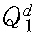
= 500 -2P 에서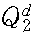
= 450 - 2P 로 변화하면 시장의 균형가격은 얼마만큼 감소하는가? (P는 가격, Qd는 수요량이며, 다른 조건은 일정하다고 가정한다)- 25
- 50
- 75
- 100
- 125
(정답률: 46%)
7. 부동산의 정착물에 관한 설명 중 틀린 것은?
- 제거하여도 건물의 기능 및 효용의 손실이 없는 부착된 물건은 동산으로 취급한다.
- 토지에 정착되어 있으나 매년 경작노력을 요하지 않는 나무와 다년생식물 등은 부동산의 정착물로 간주되지 않기 때문에 부동산중개의 대상이 되지 않는다.
- 정착물은 당사자들 간의 합의나 쓰임새, 관계 등에 따라 주물 또는 종물로 구분될 수 있다.
- 정착물은 사회ㆍ경제적인 면에서 토지에 부착되어 계속적으로 이용된다고 인정되는 물건이다.
- 정착물은 토지와 서로 다른 부동산으로 간주되는 것과 토지의 일부로 간주되는 것으로 나눌 수 있다.
(정답률: 55%)
8. 부동산시장에서 나타나는 현상의 하나인 공실률에 관한 설명 중 틀린 것은?
- 공실률이란 임대 대상 부동산이 임대기간 중 임대되지 않고 비어있는 기간의 비율을 의미하기도 한다.
- 사무실의 수요분석에서는 공실률을 조사하여 과잉공급 상태에 있는지 그리고 향후 그러한 위험성은 없는지 등을 조사한다.
- 공실률 분석은 투자 부동산의 안정적인 점유율 결정에 도움을 준다.
- 공실률 조사는 부동산시장조사의 핵심사항으로 임차공간이 실제로 임차인들에 의해 어느 정도 사용되고 있는가를 파악하는 것이다.
- 다른 조건이 동일하다면 임대차 기간이 긴 경우에 비해 임대차 기간이 짧은 경우가 상대적으로 공실위험을 줄일 수 있다.
(정답률: 45%)
9. 부동산관리방식별 장ㆍ단점에 대한 설명 중 틀린 것은?
- 위탁관리방식은 전문적인 계획관리를 통해 시설물의 노후화를 늦출 수 있는 장점이 있다.
- 위탁관리방식에서 관리업체가 영리만을 추구할 경우 부실한 관리를 초래할 우려가 있다.
- 혼합관리방식은 자가관리에서 위탁관리로 이행하는 과도기에 유용할 수 있다.
- 혼합관리방식은 필요한 부분만 선별하여 위탁하기 때문에 관리의 책임소재가 분명해지는 장점이 있다.
- 자가관리방식은 관리하는 각 부분을 종합적으로 운영할 수 있을 뿐만 아니라 기밀유지에도 유리하다.
(정답률: 55%)
10. 부동산마케팅 및 광고에 관한 설명 중 틀린 것은?
- 부동산마케팅 전략을 수립할 때에는 거시환경과 미시환경에 대한 분석이 필요하다.
- 부동산의 개별성으로 인해 광고의 내용도 개별성을 갖는 것이 일반적이다.
- 고객점유마케팅 전략은 공급자와 소비자 간의 장기적ㆍ지속적 상호작용을 중시한다.
- 부동산 중개업소를 적극적으로 활용하는 것은 부동산마케팅 4P(product, price, place, promotion) 전략 중 유통경로(place)전략에 해당한다.
- 우편물에 의한 직접광고(direct mail)는 표적 고객을 대상으로 부동산을 광고할 수 있는 수단으로 유용하다.
(정답률: 31%)
11. 수익환원법에서 사용하는 환원이율을 구하는 방법이 아닌 것은?
- 분해법(breakdown method)
- 요소구성법(build-up method)
- 시장추출법(market extraction method)
- 투자결합법(band-of-investment method)
- 엘우드(Ellwood)법
(정답률: 37%)
12. 지역분석의 대상지역에 관한 설명으로 틀린 것은?
- 사례자료를 동일수급권 내 유사지역에서 구할 경우 지역요인의 비교과정은 필요하지 않다.
- 인근지역과 동일수급권 내 유사지역은 지리적으로 인접할 필요는 없으나, 그 지역 내 부동산 상호간에 대체ㆍ경쟁관계가 성립하여 가격형성에 영향을 미치는 지역이다.
- 인근지역이란 대상부동산이 속해 있는 지역이다.
- 인근지역의 범위가 지나치게 확대되면 가격수준의 판정이 어려워질 수 있다.
- 일반적으로 주거지의 동일수급권은 도심으로 통근이 가능한 지역의 범위와 일치하는 경향이 있으며, 지역적 선호도에 따라 그 범위가 좁아지기도 한다.
(정답률: 31%)
13. 정부는 부동산시장의 안정과 투기억제를 위하여 많은 부동산정책을 시행하여 왔다. 참여정부가 부동산대책으로 발표한 내용과 거리가 먼 것은?
- 부동산실거래가 신고제 도입
- 종합부동산세 도입
- 취득세 및 등록세 세율 인상
- 재건축개발이익 환수제 시행
- 주택 양도소득세제 강화
(정답률: 41%)
14. 아래 예문의 ( ) 안에 들어갈 숫자는?
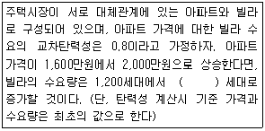
- 1,280
- 1,380
- 1,440
- 1,600
- 1,860
(정답률: 39%)
15. 부동산권리분석에 대한 설명 중 틀린 것은?
- 부동산권리분석에서는 분석과 판단의 범위를 넓혀서 보도록 노력해야 한다.
- 토지이용을 규제하는 법률의 수가 많고 규제내용이 복잡할수록 부동산거래사고를 많이 발생시킬 수 있다.
- 등기부상 소유권 이전은 완료하였으나, 타인이 불법으로 점유하고 있는 경우는 인수불가능한 거래사고 유형에 해당된다.
- 자료의 판독에서는 자료의 내용을 확인ㆍ판단하는 일도 중요하지만 자료 자체의 진위 판단도 중요하다.
- 부동산권리분석은 공부 및 자료상의 하자를 발견하기 위한 활동이므로 임장활동이 필요없다.
(정답률: 50%)
16. 표준산업분류상 부동산업의 분류에 대한 설명으로 틀린 것은?
- 부동산업은 부동산임대 및 공급업, 부동산관련서비스업으로 분류된다.
- 부동산임대업은 주거용 건물임대업, 비주거용 건물임대업, 기타 부동산임대업으로 분류된다.
- 부동산공급업은 주거용 건물공급업, 비주거용 건물공급업, 기타 부동산공급업으로 분류된다.
- 부동산관련서비스업은 부동산관리업, 부동산감정업, 부동산컨설팅업, 부동산중개업으로 분류된다.
- 부동산관련서비스업 중 부동산관리업은 주거용 부동산관리업과 비주거용 부동산관리업으로 분류된다.
(정답률: 41%)
17. 도시 A와 도시 B간에 도시 C가 있다. 레일리의 소매인력법칙(Reilly's Law of Retail Gravitation)을 이용하여 도시 C로부터 도시 A와 도시 B로의 인구유인 비율을 구하시오.
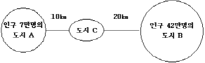
- 도시 A 33.3%, 도시 B 66.7%
- 도시 A 40.0%, 도시 B 60.0%
- 도시 A 50.0%, 도시 B 50.0%
- 도시 A 60.0%, 도시 B 40.0%
- 도시 A 66.7%, 도시 B 33.3%
(정답률: 47%)
18. 상점은 입지특성과 구매습관에 의해 분류된다. 이와 관련된 설명으로 옳은 것은?
- 집심성(集心性) 점포는 같은 업종이 서로 모여 입지해야 유리한 유형의 점포이다.
- 선매품점(選買品店)은 구매의 노력과 비용에 크게 구애받지 않고 수요자의 취미ㆍ기호 등에 따라 구매하는 상품을 취급하는 점포이다.
- 집재성(集在性) 점포는 동일 업종의 점포끼리 국부적 중심지에 입지해야 유리한 유형의 점포이다.
- 산재성(散在性) 점포는 분산입지해야 유리한 유형의 점포이다.
- 전문품점(專門品店)은 여러 상점들을 상호 비교한 후에 구매하는 상품을 취급하는 점포이다.
(정답률: 36%)
19. 부동산분석은 단계별 분석과정을 거쳐 이루어진다. 단계를 순서대로 나열한 것은?
- 지역경제분석 → 시장성분석 → 시장분석 → 타당성분석 → 투자분석
- 지역경제분석 → 시장분석 → 시장성분석 → 타당성분석 → 투자분석
- 지역경제분석 → 시장분석 → 타당성분석 → 시장성분석 → 투자분석
- 지역경제분석 → 시장성분석 → 타당성분석 → 시장분석 → 투자분석
- 지역경제분석 → 타당성분석 → 시장분석 → 시장성분석 → 투자분석
(정답률: 44%)
20. 가격이 10억원인 아파트를 구입하기 위해 3억원을 대출받았다. 대출이자율은 연리 7%이며, 20년간 원리금균등분할상환방식으로 매년 상환하기로 하였다. 첫 회에 상환해야 할 원금은? (단, 연리 7%ㆍ기간 20년의 저당상수는 0.094393이며, 매기 말에 상환하는 것으로 한다)
- 7,290,000원
- 7,317,900원
- 8,127,400원
- 8,647,200원
- 8,951,200원
(정답률: 46%)
21. 주택시장에 대한 정부정책의 효과에 대한 설명 중 옳은 것은? (단, 다른 조건은 일정하다고 가정한다)
- 주택의 공급곡선이 완전비탄력적일 경우 주택에 부과되는 재산세는 전부 수요자에게 귀착된다.
- 정부가 규제하는 임대료의 상한이 시장균형임대료보다 높다면, 임대료규제는 시장에서 임대주택 공급량에 영향을 미치지 않는다.
- 일반적으로 임대료규제는 기존 임차인들의 이동을 활발하게 만든다.
- 저소득층에게 임대료를 보조할 경우 주택 소비량은 증가하지만 다른 재화의 소비량은 항상 감소한다.
- 임대주택 공급자에게 보조금을 지급하는 방식은 임차인에게 보조금을 지급하는 방식보다 임차인의 주거지 선택의 자유를 보장하는 장점이 있다.
(정답률: 33%)
22. 정부는 사회간접자본시설 등을 확충하기 위해 민간투자 사업방식을 활용하고 있다. 다음 설명에 해당하는 민간투자 사업방식은?
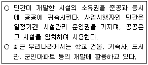
- BOT(build-operate-transfer) 방식
- BTO(build-transfer-operate) 방식
- BLT(build-lease-transfer) 방식
- BTL(build-transfer-lease) 방식
- BOO(build-own-operate) 방식
(정답률: 28%)
23. 토지은행(land banking)제도에 관한 설명 중 틀린 것은?
- 공공이 장래에 필요한 토지를 미리 확보하여 보유하는 제도다.
- 토지선매를 통해 장래에 필요한 공공시설용지를 적기에 저렴한 수준으로 공급할 수 있다.
- 개인 등에 의한 무질서하고 무계획적인 토지개발을 막을 수 있어서 효과적인 도시계획 목표의 달성에 기여할 수 있다.
- 적절한 투기방지대책 없이 대량으로 토지를 매입할 경우 지가상승을 유발할 수 있다.
- 토지양도 의사표시가 전제된다는 점에서 토지수용제도보다 토지소유자의 사적 권리를 침해하는 정도가 크다.
(정답률: 52%)
24. 정부의 부동산시장 개입에 대한 설명 중 틀린 것은?
- 시장실패를 보완하고 자원배분의 효율성을 높이기 위해 개입할 수 있다.
- 소득재분배, 주거복지의 증진 등 사회적 목표를 달성하기 위해 개입할 수 있다.
- 부(-)의 외부효과가 발생하는 경우 세금 부과나 규제 등을 통해 자원배분의 비효율성을 감소시킬 수 있다.
- 공원 등과 같은 공공재의 경우 과소생산의 문제가 발생될 수 있기 때문에 개입할 수 있다.
- 중산층 이상의 주택수요에 부응하기 위해 최저주거기준을 설정하여 운용할 수 있다.
(정답률: 40%)
25. 부동산중개업 경영에서 고정비용에 해당되지 않는 항목은?
- 사무원 급료
- 차입금이자
- 판매실적 수당
- 사무실 임차료
- 감가상각비
(정답률: 53%)
26. 다음은 주택의 수요ㆍ공급에 관한 그림이다. 수요곡선 를 으로 이동시킬 수 있는 요인은? (단, 다른 요인은 일정하다고 가정하며, 는 공급곡선이다)
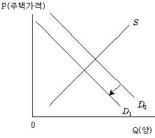
- 주택거래규제의 완화
- 수요자의 소득 증가
- 모기지대출(mortgage loan)금리의 하락
- 대체재 가격의 하락
- 주택건축자재 가격의 하락
(정답률: 47%)
27. 다음 보기와 관련이 깊은 부동산가격원칙을 맞게 나열한 것은?(순서대로 ㄱ, ㄴ, ㄷ)
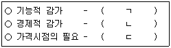
- 기여의 원칙, 균형의 원칙, 변동의 원칙
- 적합의 원칙, 기여의 원칙, 예측의 원칙
- 대체의 원칙, 기여의 원칙, 예측의 원칙
- 균형의 원칙, 대체의 원칙, 예측의 원칙
- 균형의 원칙, 적합의 원칙, 변동의 원칙
(정답률: 55%)
28. 부동산금융과 관련된 설명 중 틀린 것은?
- MBB(mortgage backed bond)의 투자자는 최초의 주택저당채권 집합물(mortgage pool)에 대한 소유권을 갖지 않는다.
- 한국주택금융공사는 보유하고 있는 주택저당채권 집합물을 기초로 주택저당증권을 발행하고 있다.
- MPTS(mortgage pass-through security)란 지분형 주택저당증권으로 관련 위험이 투자자에게 이전된다.
- 역모기지론(reverse mortgage loan)은 한국은행에서 채권 형태로 발행된다.
- CMO(collateralized mortgage obligation)의 발행자는 주택저당채권 집합물의 소유권을 갖는다.
(정답률: 43%)
29. 재무비율과 승수에 대한 설명 중 옳은 것은?
- 종합자본환원율(overall capitalization rate)의 역수는 순소득승수(net income multiplier)이다.
- 부채감당률(debt coverage ratio)이 1보다 작으면 차입자의 원리금 지불능력이 충분하다고 판단할 수 있다.
- 총자산회전율(total asset turnover ratio)은 투자된 총자산에 대한 순영업소득(net operating income)의 비율이다.
- 대부비율(loan to value ratio)이 높을수록 투자의 레버리지 효과가 작아진다.
- 채무불이행률(default ratio)은 순영업소득이 영업경비와 부채서비스액을 감당할 수 있는 능력이 있는가를 측정한다.
(정답률: 35%)
30. 공공부문이 직접 공급자나 수요자의 역할을 수행하면서 부동산시장에 개입하는 방법은?
- 용도지역ㆍ지구 지정
- 개발부담금 부과
- 공영개발사업 시행
- 개발권양도제(TDR) 시행
- 종합부동산세 부과
(정답률: 55%)
31. A 부동산회사는 80실의 임대주택을 운영하고 있다. 임대주택 운영에 소요되는 고정비용은 월 3,600만원이고, 변동비용은 1실 당 월 20만원이다. 다른 조건이 일정할 경우, A 부동산회사의 손익분기점이 되는 1실 당 월임대료 수입은? (단, 공실은 없다고 가정한다)
- 60만원
- 65만원
- 70만원
- 75만원
- 80만원
(정답률: 37%)
32. 주택저당대출시 금융기관이 대출금리를 인상시킬 수 있는 요인으로 틀린 것은? (단, 다른 조건은 일정하다고 가정한다)
- 향후 인플레이션율이 상승할 것으로 예상된다.
- 통화당국에서 콜금리를 인상하였다.
- 차입자의 취업상태가 불안정하다.
- 차입자의 과거 대출에 대한 연체실적이 많다.
- 정부가 대출상환액 중 이자비용에 대한 소득공제한도를 감소시켰다.
(정답률: 46%)
33. 오피스 빌딩의 순영업소득(net operating income)을 추정할 때 필요한 항목이 아닌 것은?
- 임대료 수입
- 공실률
- 주차료 수입
- 화재보험료
- 이자비용
(정답률: 39%)
34. 부동산감정평가에 관한 설명 중 틀린 것은?
- 감가수정에 사용하는 내용연수는 경제적 내용연수이다.
- 평가목적과 가격시점은 감정평가서에 필수적으로 기재해야 하는 사항이다.
- 개별분석은 개별요인을 분석하여 최유효이용을 판정하는 작업이다.
- 거래사례비교법은 시장성에 근거하므로 과도한 호황ㆍ불황기에도 매우 유용하다.
- 신뢰할 수 있는 자료가 있는 경우에는 평가대상 물건에 대한 실지조사를 생략할 수 있다.
(정답률: 23%)
35. 부동산투자의 타당성 판단기준 중 화폐의 시간가치를 고려하지 않는 것은?
- 회계적수익률(accounting rate of return)법
- 내부수익률(internal rate of return)법
- 순현재가치(net present value)법
- 수익성지수(profitability index)법
- 현가 회수기간(present value payback period)법
(정답률: 50%)
36. 1,000억원의 부동산펀드가 빌딩 A, B, C로 구성되어 있다. 다음 설명 중 옳은 것은?
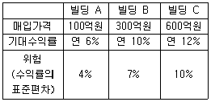
- 부동산펀드의 기대수익률은 연 10.5%다.
- 빌딩 A는 빌딩 C보다 고위험ㆍ고수익의 투자 부동산이다.
- 투자자의 요구수익률이 연 10%일 경우, 이 투자자는 부동산펀드에 투자하지 않을 것이다.
- 부동산펀드에 빌딩을 추가로 편입시킬 경우 이 펀드의 체계적 위험이 줄어들 것이다.
- 빌딩 A, B, C 중에서 위험 1단위 당 기대수익률이 가장 높은 것은 빌딩 A다.
(정답률: 37%)
37. 인근표준획지와 비교한 대상토지의 특성은 다음과 같다. 인근표준획지와 대비한 대상토지의 개별요인 비교치는?
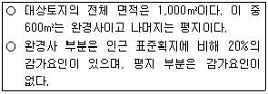
- 0.86
- 0.88
- 0.90
- 0.92
- 0.94
(정답률: 50%)
38. 부동산투자의 위험 및 위험관리에 관한 설명 중 틀린 것은?
- 유동성위험(liquidity risk)이란 투자부동산을 현금으로 전환하는 과정에서 발생하는 시장가치의 손실가능성을 의미한다.
- 수익은 가능한 한 낮게 그리고 비용은 가능한 한 높게 추정하여 수익과 비용의 불확실성을 투자결정에 반영하기도 한다.
- 위험도가 높은 자산을 투자에서 제외시키는 것은 위험을 전가(risk shifting)시키는 방법의 하나다.
- 수익성에 결정적인 영향을 주는 변수들에 대해서는 감응도 분석을 하기도 한다.
- 투자금액을 모두 자기자본으로 조달할 경우 금융위험(financial risk)을 제거할 수 있다.
(정답률: 36%)
39. 다음 그림은 서로 다른 두 유형의 부동산 A와 B의 수요곡선과 공급곡선을 나타낸 것이다. 공급곡선(S)은 동일한 것으로 가정한다. 그림에 대한 설명 중 옳은 것은 모두 몇 개인가? (단, 다른 조건은 일정하다고 가정한다)
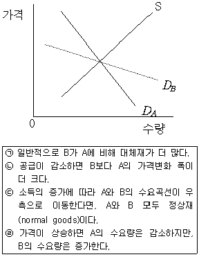
- 없음
- 1개
- 2개
- 3개
- 4개
(정답률: 30%)
40. 원가법에서 사용하는 재조달원가에 관한 설명 중 옳은 것은?
- 재조달원가는 신축시점 현재 건축물을 신축하는데 소요되는 투하비용을 말한다.
- 자가건설의 경우 재조달원가는 도급건설한 경우에 준하여 처리한다.
- 대체원가(replacement cost)를 이용하여 재조달원가를 산정할 경우 물리적 감가수정은 필요하지 않지만 기능적 감가수정 작업은 필요하다.
- 재조달원가를 구성하는 표준적 건설비에는 수급인의 적정이윤이 포함되지 않는다.
- 복제원가(reproduction cost)는 동일한 효용을 가진 건축물을 신축하는데 소요되는 비용이다.
(정답률: 34%)
2과목: 민법 및 민사특별법
41. ‘상가건물임대차보호법’에 관한 설명으로 틀린 것은?
- 임대차기간을 1년 미만으로 정한 특약이 있는 경우, 임대인은 그 기간의 유효함을 주장할 수 있다.
- 임대차가 종료한 경우에도 임차인이 보증금을 반환받을 때까지 임대차관계는 존속하는 것으로 본다.
- 임차인의 계약갱신요구권은 최초의 임대차기간을 포함한 전체 임대차기간이 5년을 초과하지 않는 범위 내에서만 행사할 수 있다.
- 임차권등기명령신청을 기각하는 법원의 결정에 대하여 임차인은 항고할 수 있다.
- 임차인이 3기의 차임액에 달하도록 차임을 연체한 경우, 임대인은 임차인의 계약갱신요구를 거절할 수 있다.
(정답률: 43%)
42. 2006. 10. 23. 甲은 乙에게 X건물을 1억원에 팔겠다고 이메일(e-mail)로 청약하면서 10. 27. 18시까지는 매수여부를 알려달라고 했으며, 그 메일은 乙에게 즉시 도달하였다. 다음 중 틀린 것은?
- 청약에는 계약내용을 결정할 수 있을 정도의 사항이 포함되어야 한다.
- 甲은 10. 27. 18시까지는 청약을 철회할 수 있다.
- 乙이 9천만원이면 사겠다고 甲에게 보낸 이메일이 10. 24. 14시에 도달했다면 새로운 청약으로 본다.
- 10. 27. 20시경 甲에게 이메일로 보내진 乙의 승낙을 甲은 새 청약으로 볼 수 있다.
- 만일 甲이 10. 25. 돌연 사망하였더라도 청약은 그 효력을 상실하지 않는다.
(정답률: 42%)
43. 물권의 소멸에 관한 설명으로 틀린 것은?
- 소유권은 소멸시효에 걸리지 않는다.
- 지역권은 20년간 행사하지 않으면 소멸시효가 완성한다.
- 피담보채권이 존속하는 한 저당권은 단독으로 소멸시효에 걸리지 않는다.
- 지상권이 저당권의 목적이면, 지상권자가 목적토지의 소유자를 상속하더라도 혼동으로 소멸하지 않는다.
- 토지소유권과 광업권이 동일인에게 귀속하게 되면 광업권은 혼동으로 소멸한다.
(정답률: 41%)
44. 민법상의 부동산환매에 관한 설명으로 틀린 것은?
- 환매특약은 매매계약과 동시에 하여야 한다.
- 환매대금은 특약이 없는 한 매도인이 수령한 매매대금과 매수인이 부담한 매매비용을 합한 것이다.
- 환매기간은 5년을 넘지 못한다.
- 환매기간은 특약으로 연장될 수 있다.
- 환매기간 내에 매도인이 매수인에게 환매대금을 제공하지 않으면 환매권은 소멸한다.
(정답률: 48%)
45. 甲과 乙의 대지 및 주택은 이웃하고 있다. 상린관계에 관한 설명 중 옳은 것은?
- 乙소유 주택의 일부는 甲소유 대지와 乙소유 대지의 경계표인 담이 될 수 없다.
- 甲소유의 감나무뿌리가 乙소유 대지를 침범한 경우, 乙은 甲의 의사에 반해서도 임의로 그 뿌리를 제거할 수 있다.
- 甲이 乙소유 주택에 들어갈 필요가 있는 경우에는 乙의 승낙을 받아야 하고, 乙이 거절하면 판결로 이에 갈음할 수 있다.
- 甲이 건물을 건축하기 위해서 乙소유 대지의 사용이 필수적인 경우, 필요한 범위 내에서 그 대지를 임의로 사용할 수 있다.
- 甲이 乙소유 대지와의 경계로부터 반미터 이상의 거리를 두지 않고 건물을 완성하였더라도 그 건물착공일로부터 1년이 경과되지 않았다면, 乙은 甲에게 그 철거를 청구할 수 있다.
(정답률: 40%)
46. 甲이 자기소유의 X부동산을 乙에게 매도하고 매매대금을 수령하였으나, 이를 알고 있는 丙이 적극적으로 권유하여 甲으로부터 위 부동산을 매수하고 소유권이전등기를 경료하였다. 다음 중 틀린 것은?(다툼이 있으면 판례에 의함)
- 甲과 丙사이의 매매계약은 무효이다.
- 乙은 甲에 대하여 소유권이전채무의 불이행을 이유로 손해배상을 청구할 수도 있다.
- 乙은 甲을 대위하지 않고 丙에 대하여 직접 등기의 말소를 청구할 수 있다.
- 乙은 소유권이전청구권의 보전을 위하여, 甲과 丙 사이의 매매계약에 대하여 채권자취소권을 행사할 수 없다.
- 丙으로부터 X부동산을 전득한 丁이 선의이더라도 소유권을 취득할 수 없다.
(정답률: 43%)
47. 법률행위의 대리에 관한 설명으로 옳은 것은?(다툼이 있으면 판례에 의함)
- 불공정한 법률행위에서 ‘궁박’의 요건은 대리인을 기준으로 판단한다.
- 대리인은 의사능력자임을 요하지 않는다.
- 매매계약을 체결할 권한이 있는 대리인에게 특별한 사정이 없는 한 중도금이나 잔금을 수령할 권한까지는 없다.
- 대리인이 본인을 위하여 대리행위를 한다는 취지를 인식할 수 있을 정도의 표시만으로는 이를 대리관계의 표시로 볼 수 없다.
- 사자(使者)에게 외견상 어떤 권한이 있다는 표시 내지 행동이 있어 상대방이 이를 신뢰할 만한 정당한 사유가 있으면 표현대리의 법리에 의하여 본인이 책임질 수 있다.
(정답률: 35%)
48. 용익물권에 관한 설명으로 옳은 것은?
- 지상권이 설정된 토지위에 지상권자가 신축한 건물이 그의 과실로 소실된 때에는 그 지상권은 소멸한다.
- 대지와 건물이 동일한 소유자에 속하는 그 건물에 전세권을 설정한 경우, 그 대지소유권의 특별승계인은 전세권자에 대하여 지상권을 설정한 것으로 본다.
- 전세목적물의 통상 관리에 속한 수선의무는 전세권설정자에게 있다.
- 공유자의 1인이 지역권을 취득한 경우, 다른 공유자도 이를 취득한다.
- 지상권이 저당권의 목적인 경우, 2년 이상의 지료연체를 이유로 하는 지상권소멸청구는 인정되지 않는다.
(정답률: 39%)
49. 동시이행항변권에 관한 설명으로 틀린 것은?(다툼이 있으면 판례에 의함)
- 저당권설정등기의 말소와 피담보채무의 변제는 동시이행관계에 있지 않다.
- 동시이행관계에 있는 일방의 채무도 이를 발생시킨 계약과 별개의 약정으로 성립한 상대방의 채무와는 특약이 없는 한 동시이행관계에 있다.
- 동시이행관계에 있던 채무 중 어느 한 채무의 이행불능으로 발생한 손해배상채무는 반대채무와 여전히 동시이행관계에 있다.
- 계약이 무효 또는 취소된 경우에 각 당사자의 원상회복의무는 동시이행관계에 있다.
- 저당권이 설정된 부동산의 매매계약에서 소유권이전등기의무 및 저당권등기말소의무는 특별한 사정이 없는 한 대금지급의무와 동시이행관계에 있다.
(정답률: 23%)
50. ‘가등기담보 등에 관한 법률’에 대한 설명으로 틀린 것은?(다툼이 있으면 판례에 의함)
- 가등기담보권자는 일정한 요건아래 소유권취득 또는 경매청구를 할 수 있다.
- 채권자가 나름대로 평가한 청산금액이 객관적인 청산금평가액에 미달하더라도 담보권실행통지로서 효력이 있다.
- 청산금은 실행통지 당시의 목적부동산 가액에서 그 시점에 목적부동산에 존재하는 모든 피담보채권액을 공제한 차액이다.
- 가등기의 주된 목적이 매매대금채권의 확보에 있고, 대여금채권의 확보는 부수적 목적인 경우, 동법은 적용되지 않는다.
- 가등기담보권자가 담보권실행 전에 그의 권리를 보전하기 위하여 채무자의 제3자에 대한 선순위담보채무를 대위변제하여 발생한 구상권도 가등기담보계약에 의하여 담보되는 것이 원칙이다.
(정답률: 35%)
51. 법률행위 및 그 대리에 관한 설명으로 옳은 것은?(다툼이 있으면 판례에 의함)
- 본인의 허락이 없어도 다툼이 있는 채무의 이행에 대하여 자기계약이나 쌍방대리가 허용된다.
- 무권대리행위의 추인에는 원칙적으로 소급효가 없다.
- 정지조건부 법률행위에서는 권리취득을 부정하는 자가 조건의 불성취를 증명할 책임이 있다.
- 강제집행을 면할 목적으로 허위의 근저당권설정등기를 경료하는 행위는 반사회적 법률행위이다.
- 수령무능력자에 대한 의사표시의 도달을 그 법정대리인이 안 경우, 표의자는 무능력자에게 대항할 수 있다.
(정답률: 14%)
52. 분묘기지권에 관한 설명으로 옳은 것은?(다툼이 있으면 판례에 의함)
- 토지소유자의 승낙없이 분묘를 설치한 후 20년간 평온ㆍ공연하게 분묘기지를 점유한 자는 그 기지의 소유권을 시효취득한다.
- 타인토지에 분묘를 설치ㆍ소유하는 자에게는 그 토지에 대한 소유의 의사가 추정된다.
- 등기는 분묘기지권의 취득요건이다.
- 분묘기지권을 시효취득한 자는 지료를 지급할 필요가 없다.
- 존속기간에 관한 약정이 없는 분묘기지권의 존속기간은 5년이다.
(정답률: 32%)
53. 법률행위의 부관에 관한 설명으로 옳은 것은?(다툼이 있으면 판례에 의함)
- 조건의 성취여부가 미정(未定)인 권리도 담보로 제공할 수 있다.
- 정지조건부 매매계약에 기한 토지소유권이전청구권을 보전하기 위한 가등기는 허용되지 않는다.
- 조건이 성취된 해제조건부 법률행위는 특약이 없는 한 소급하여 효력을 잃는다.
- 조건이 선량한 풍속에 반하면 조건없는 법률행위가 된다.
- 존속기간을 ‘임차인에게 매도할 때까지’로 정한 임대차계약은 원칙적으로 불확정기한부 법률행위이다.
(정답률: 37%)
54. 계약의 성립에 관한 설명으로 틀린 것은?(다툼이 있으면 판례에 의함)
- 격지자간의 계약은 승낙의 의사표시가 청약자에게 도달하면 그 발송시점에 성립한다.
- 당사자 사이에 동일한 내용의 청약이 교차된 경우, 두 청약이 모두 도달한 때에 계약이 성립한다.
- 계약에 적용되는 법령과 동일한 약관내용도 중요한 것이면 사업자의 설명의무가 면제되지 않음이 원칙이다.
- 약관의 일부조항이 무효이더라도 계약은 나머지 부분만으로 유효함이 원칙이다.
- 행위자와 명의자 중 누가 계약당사자인가에 관해 행위자와 상대방의 의사가 불일치하면 합리적인 상대방의 관점에서 계약당사자를 결정한다.
(정답률: 15%)
55. 甲은 자기소유의 임야를 개발할 생각에 개발업자 乙과 교섭하였고, 계약이 확실하게 체결되리라는 정당한 기대 내지 신뢰를 부여하여, 乙은 그 신뢰에 따라 행동하였다. 그러나 甲은 계약체결을 거부하였다. 다음 중 옳은 것은?(다툼이 있으면 판례에 의함)
- 乙이 甲에게 계약체결을 강제할 수 없다.
- 계약이 체결되지 않았으므로 甲에게 법적 책임은 없다.
- 계약체결거부로 손해를 입은 乙에게 甲은 채무불이행 책임을 질 수 있다.
- 계약체결거부의 이유가 상당하더라도 신의칙에 비추어 甲은 乙이 입은 손해를 배상해야 한다.
- 甲이 손해배상책임을 지는 경우, 계약체결을 신뢰한 乙이 입은 모든 손해를 배상해야 한다.
(정답률: 29%)
56. 지상권에 관한 설명으로 틀린 것은?(다툼이 있으면 판례에 의함)
- 지상권자는 반대특약이 없는 한 유익비의 상환을 청구할 수 있다고 해석함이 일반적이다.
- 상당기간 내구력을 가지며 용이하게 해체할 수 없는 건물의 소유를 목적으로 하는 지상권의 존속기간은 약정이 없으면 30년이다.
- 지상권의 존속기간을 영구로 약정하는 것도 허용된다.
- 지상권의 양도를 금지하는 특약이 있더라도 지상권의 양도는 절대적으로 보장된다.
- 종류를 정하지 않은 수목의 소유를 목적으로 한 지상권의 존속기간은 15년이다.
(정답률: 35%)
57. 甲은 자기소유 X건물의 전면적 수리를 乙에게 의뢰하였고, 대금지급기일이 경과했음에도 그 대금을 지급함이 없이 수리를 완료한 乙에게 건물의 반환을 요구한다. 다음 중 틀린 것은?(다툼이 있으면 판례에 의함)
- 乙은 甲이 수리대금을 지급할 때까지 X건물을 유치할 수 있다.
- 乙은 X건물을 경매할 수 있다.
- 乙은 X건물을 선량한 관리자의 주의로 점유하여야 한다.
- 乙이 보존행위로서 X건물을 사용한 경우, 乙은 甲에 대하여 불법행위에 기한 손해배상책임을 지지 않는다.
- 乙의 과실없이 X건물이 소실된 경우, 乙의 권리는 甲의 화재보험금청구권 위에 미친다.
(정답률: 49%)
58. 甲은 자기소유의 신축건물(공부상 용도는 음식점)을 乙에게 보증금 5천만원, 월세 300만원에 임대하고, “乙은 甲의 승인하에 건물의 개축 등을 할 수 있으나 임대기간 종료시에는 원상회복하여 명도하며, 부속물매수청구는 하지 않는다”고 특약하였다. 乙은 甲의 동의를 얻어 주방시설(건물의 구성부분이 아니라 독립성이 인정됨) 설치비용을 지출하여 음식점을 개업하였으나 영업이 부진하자 임대차기간만료와 동시에 음식점을 폐쇄하고 사용ㆍ수익하지 않고 있다. 다음 중 옳은 것은?(다툼이 있으면 판례에 의함)
- 乙은 보증금반환청구권을 가지므로 甲의 건물명도청구에 대하여 유치권을 주장할 수 있다.
- 乙이 주방시설의 매수청구를 하기 위해서는 甲에게 계약의 갱신을 요구하여야 한다.
- 乙은 甲에게 임대차기간 만료 이후의 임료상당의 부당이득을 반환하여야 한다.
- 乙이 부속물매수청구를 하면 원칙적으로 부속물매수대금지급의무와 부속물인도의무는 동시이행관계에 있다.
- 부속물매수청구권은 임대차 종료시에 인정되므로, 甲과 乙사이의 임대차계약이 乙의 채무불이행으로 인하여 해지되더라도 인정된다.
(정답률: 30%)
59. 甲은 자기소유의 X건물에 대하여 乙에게 전세권을 설정해 주었다. 다음 중 옳은 설명을 모두 고른 것은?(다툼이 있으면 판례에 의함)
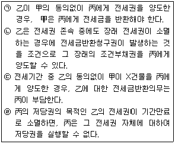
- (ㄱ)
- (ㄴ), (ㄷ)
- (ㄱ), (ㄹ)
- (ㄴ), (ㄷ), (ㄹ)
- (ㄱ), (ㄴ), (ㄷ), (ㄹ)
(정답률: 21%)
60. 법률사실과 법률요건에 관한 설명으로 틀린 것은?
- 임대차계약은 청약과 승낙이라는 의사표시의 합치로 성립하는 법률요건이다.
- 어떤 사정을 알지 못한다는 의미에서의 선의도 법률사실이다.
- 시간의 경과는 사람의 정신작용에 의하지 않는 법률사실이다.
- 무권대리행위의 추인여부에 관한 상대방의 최고는 의사의 통지이다.
- 민법 제552조에 따라 상대방이 최고했음에도 해제권자의 통지가 없기 때문에 해제권이 소멸하는 효과는 당사자의 의사에 근거한다.
(정답률: 34%)
61. ‘집합건물의 소유 및 관리에 관한 법률’에 대한 설명으로 틀린 것은?(다툼이 있으면 판례에 의함)
- 전(前) 구분소유자의 특별승계인은 체납된 공용부분 관리비는 물론 그에 대한 연체료도 승계한다.
- 재건축결의에는 구분소유자 및 의결권의 각 5분의 4이상의 다수에 의한 결의가 필요하다.
- 분양대금을 완납하였음에도 분양자측의 사정으로 소유권이전등기를 경료받지 못한 수분양자도 관리단에서 의결권을 행사할 수 있다.
- 재건축결의에 찬성하지 않은 구분소유자에게 매도청구권을 행사하기 위한 전제로서의 최고는 반드시 서면으로 해야 한다.
- 재건축 비용의 분담액 또는 산출기준을 확정하지 않은 재건축결의는 무효임이 원칙이다.
(정답률: 35%)
62. 甲은 자기소유의 X상가건물을 乙에게 보증금 4억원에 임대하였다. 임대차기간 중 乙은 X건물에 유지비 2백만원, 개량비 8백만원을 지출하였고, 그 후 甲은 임대인의 지위를 승계시키지 않은 채 X건물을 丙에게 양도하였다. 다음 중 틀린 것은?(다툼이 있으면 판례에 의함)
- 乙은 甲에게 임대차기간 중에도 유지비 2백만원의 상환을 청구할 수 있다.
- X건물의 반환을 청구하는 丙에 대하여 乙은 점유자의 비용상환청구권(민법 제203조)에 의하여 비용의 상환을 청구할 수 있다.
- X건물의 구성부분 일부가 파손되었지만 저렴ㆍ용이하게 수선될 수 있어 사용ㆍ수익을 방해하지 않을 정도인 경우, 甲은 乙에 대하여 수선의무를 부담하지 않음이 원칙이다.
- 임대차기간 중에는 乙이 甲에 대하여 개량비 8백만원의 상환을 청구할 수 없다.
- 乙은 임차인의 비용상환청구권(민법 제626조)에 기하여 임대차종료시에 그 가액의 증가가 현존한 때에는 甲에게 유익비의 상환을 청구할 수 있다.
(정답률: 32%)
63. X토지에 관하여 2004. 3. 10. 甲명의로 소유권보존등기가, 20⑤. 6. 20. 매매에 기하여 乙명의로 소유권이전청구권보전을 위한 가등기가, 그리고 2006. 9. 11. 증여에 기하여 丙명의로 소유권이전등기가 각각 경료되어 있다. 다음 중 틀린 것은?(다툼이 있으면 판례에 의함)
- 乙이 甲에 대하여 소유권이전등기를 청구할 법률관계가 있다고 추정되지 않는다.
- 乙은 丙이 아니라 甲에게 가등기에 기한 본등기를 청구하여야 한다.
- 乙이 가등기에 기한 본등기를 하더라도 그동안 丙의 사용ㆍ수익에 관하여 乙은 부당이득반환을 청구할 수 없다.
- 丙은 甲에 대하여 적법한 등기원인에 의하여 X토지의 소유권을 취득한 것으로 추정된다.
- 만일 X토지에 관하여 2004. 10. 20. 丁명의로 중복된 소유권보존등기가 마쳐졌다면, 乙은 가등기에 기한 본등기를 하기 전에도 그 말소를 청구할 수 있다.
(정답률: 28%)
64. ‘주택임대차보호법’에 관한 설명으로 옳은 것은?(다툼이 있으면 판례에 의함)
- 동법의 적용대상이 되는 주거용 건물인지는 공부(公簿)상 용도표시만으로 결정된다.
- 대지에 관한 저당권설정 후 지상건물이 신축된 경우에도 소액임차인은 대지의 매각대금에서 우선변제를 받을 수 있다.
- 주택에 대항력 있는 임차권이 존재함을 알지 못하고 이를 매수한 자는 이로 인하여 계약목적을 달성할 수 없는 경우에 한하여 매매계약을 해제할 수 있다.
- 임차주택의 경매시, 동법상의 대항요건만을 갖춘 임차인이 매각대금에서 저당권자 기타 채권자보다 보증금을 우선변제받을 수 있는 경우는 없다.
- 임차인이 보증금반환청구소송의 확정판결에 기하여 임차주택의 경매를 신청하는 경우, 그 집행개시를 위해서는 반대의무의 이행제공을 해야 한다.
(정답률: 32%)
65. 토지임차인의 지상물매수청구권에 관한 설명으로 옳은 것은?(다툼이 있으면 판례에 의함)
- 기간의 정함이 없는 임대차가 임대인의 해지통고로 소멸한 경우에 임차인은 즉시 매수청구를 할 수 있다.
- 지상물의 경제적 가치유무나 임대인에 대한 효용여부는 매수청구권의 행사요건이다.
- 매수청구권의 대상이 되는 지상물은 임대인의 동의를 얻어 신축한 것에 한한다.
- 임대차종료 전 지상물 일체를 포기하기로 하는 임대인과 임차인의 약정은 특별한 사정이 없는 한 유효하다.
- 건물소유를 목적으로 한 토지임차권이 등기되더라도 임차인은 토지양수인에게 매수청구권을 행사할 수 없다.
(정답률: 31%)
66. 금전소비대차계약에 기하여 丙에게 1억원을 지급해야 하는 甲은 자기소유의 대지를 1억원에 매수한 乙과 합의하여, 乙이 그 매매대금을 丙에게 지급하기로 하였다. 다음 중 옳은 것은?(다툼이 있으면 판례에 의함)
- 甲이 합의내용을 丙에게 통지하면 丙은 乙에 대하여 매매대금지급채권을 취득한다.
- 乙은 甲과 丙 사이의 계약이 무효라는 것을 알더라도 丙의 지급요구를 거절할 수 없다.
- 乙이 丙에게 매매대금을 지급하지 않으면 丙은 매매계약을 해제할 수 있다.
- 丙의 권리가 확정된 후에는 甲이 착오를 이유로 매매계약을 취소할 수 없다.
- 乙의 丙에 대한 대금지급채무의 불이행을 이유로 甲이 매매계약을 해제하려면 丙의 동의를 얻어야 한다.
(정답률: 30%)
67. 무권대리에 관한 설명으로 옳은 것은?(다툼이 있으면 판례에 의함)
- 부부간의 일상가사대리권은 권한을 넘은 표현대리의 기본대리권이 될 수 없다.
- 본인을 단독으로 상속한 무권대리인은 본인의 지위에서 무권대리행위의 추인을 거절할 수 없다.
- 법정대리의 경우에는 권한을 넘은 표현대리가 성립할 수 없다.
- 일부 추인된 무권대리행위는 상대방의 동의가 없더라도 유효하게 된다.
- 대리인이 기본대리권의 내용이 되는 행위와 다른 종류의 행위를 한 경우에는 권한을 넘은 표현대리가 성립할 수 없다.
(정답률: 28%)
68. 근저당권의 피담보채권이 확정되는 시기로서 틀린 것은?(다툼이 있으면 판례에 의함)
- 채무자가 파산선고를 받은 때
- 후순위 근저당권자의 경매시 선순위 근저당권의 경우, 매수인이 매각대금을 완납한 때
- 기본계약이 해지된 때
- 근저당권자가 사망한 때
- 채무자에 대한 회생절차(회사정리절차)개시결정이 있는 때
(정답률: 26%)
69. 甲은 乙소유의 주택을 임차하였다. 다음 중 틀린 것은?(다툼이 있으면 판례에 의함)
- 甲의 배우자나 자녀의 주민등록도 주택임대차보호법상의 대항요건인 주민등록에 해당한다.
- 甲의 의사와 무관하게 甲의 주민등록이 행정기관에 의해 직권말소된 경우, 임차권은 대항력을 상실함이 원칙이다.
- 대항력 있는 임대차가 종료된 후 임차주택이 양도되면, 양수인이 乙의 지위를 당연히 승계하므로 甲의 乙에 대한 보증금반환채권이 존속할 여지가 없다.
- 甲이 임차주택에 실제 거주하지 않는 경우, 甲과의 점유매개관계에 기하여 그 주택에 실제 거주하는 자가 자신의 주민등록을 마친 때에는 甲이 대항력을 취득할 수 있다.
- 만일 乙소유주택에 이미 丙의 저당권이 설정되어 있었다면, 甲은 대항력을 갖추었더라도 丙의 담보권실행으로 임차주택을 취득한 자에 대하여 임차권을 주장할 수 없다.
(정답률: 32%)
70. 법률행위에 관한 옳은 설명을 모두 고른 것은?
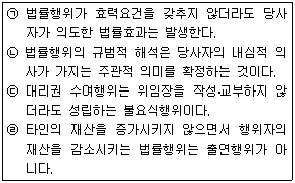
- (ㄱ), (ㄴ)
- (ㄴ)
- (ㄴ), (ㄷ)
- (ㄹ)
- (ㄷ), (ㄹ)
(정답률: 42%)
71. 부동산의 시효취득에 관한 설명으로 옳은 것은?(다툼이 있으면 판례에 의함)
- 자기소유의 부동산에 대한 취득시효는 인정되지 않는다.
- 토지의 취득시효를 주장하는 자는 점유기간 중 소유자의 변동이 없으면 취득시효의 기산점을 임의로 선택할 수 없다.
- 점유자가 주장한 매매와 같은 자주점유의 권원이 인정되지 않는다는 사유만으로 자주점유의 추정이 번복된다.
- 잡종재산이던 당시에 취득시효가 완성된 후 그 잡종재산이 행정재산으로 되었다면, 그 후 시효완성을 이유로 소유권이전등기를 청구할 수 없다.
- 타주점유자인 피상속인의 점유권을 상속한 자는 새로운 권원에 의하여 자기 고유의 점유를 개시하지 않더라도 자주점유를 주장할 수 있다.
(정답률: 28%)
72. ‘부동산 실권리자 명의등기에 관한 법률’에 대한 설명으로 틀린 것은?(다툼이 있으면 판례에 의함)
- 계약명의신탁에서 매도인이 명의신탁약정에 관하여 선의인 경우, 그 명의신탁약정은 유효하다.
- 매도인이 계약명의신탁에 관하여 악의인 경우, 명의신탁자가 매매계약상 매수인의 지위를 당연히 승계하는 것은 아니다.
- 중간생략형 3자간등기명의신탁에서 신탁자는 수탁자에 대한 매도인의 말소등기청구권을 대위행사할 수 있다.
- 경매절차에서 타인의 자금으로 부동산을 매수하여 소유권등기를 자기명의로 경료하기로 약정하고 이를 실행한 자와 그 대금부담자는 명의신탁관계에 있다.
- 상호명의신탁은 동법의 적용을 받지 않는다.
(정답률: 33%)
73. 甲소유 토지의 매수인 乙이 중도금을 그 이행기에 지급하지 않고 있다. 소유권이전은 잔금지급과 동시에 하기로 하였다. 다음 중 틀린 것은?(다툼이 있으면 판례에 의함)
- 甲이 이행최고와 함께 정한 상당한 기간 내에 乙이 중도금을 지급하지 않으면 甲은 계약을 해제할 수 있다.
- 甲이 잔금지급일에 자기채무의 이행을 제공하면 乙은 중도금, 중도금미지급에 따른 지연배상금 및 잔금을 지급해야 한다.
- 甲이 자기채무의 이행을 제공하지 않더라도 乙은 잔금지급일 이후의 중도금에 대한 지연배상책임을 진다.
- 甲이 잔금지급일에 자기채무의 이행을 제공하였음에도 乙이 매매대금을 지급하지 않으면 일정한 요건 아래 甲은 계약을 해제할 수 있다.
- 乙이 대금지급을 진지하고 종국적으로 거절하면 甲은 즉시 계약을 해제할 수 있다.
(정답률: 42%)
74. 의사표시에 관한 설명으로 옳은 것은?(다툼이 있으면 판례에 의함)
- 법률행위의 외형만 존재할 정도로 표의자 스스로 의사결정할 여지를 완전히 박탈한 강박에 의한 의사표시는 무효이다.
- 법령상 공장건축이 불가능한 토지임을 쉽게 알 수 있었던 자가 공장설립을 목적으로 이를 매수했더라도 그에게 중대한 과실이 있다고 할 수 없다.
- 비진의표시에서 ‘진의’는 표의자가 진정으로 마음 속에서 바라는 것을 의미한다.
- 동기의 착오를 이유로 법률행위를 취소하기 위해서는 당사자사이에 동기를 의사표시의 내용으로 하는 합의가 있음을 요한다.
- 의사표시의 도달은 표의자의 상대방이 통지를 현실적으로 수령한 것을 의미한다.
(정답률: 37%)
75. 무효와 취소에 관한 설명으로 틀린 것은?(다툼이 있으면 판례에 의함)
- 법률행위가 취소되면 원칙적으로 소급하여 무효로 된다.
- 확정적 무효인 법률행위도 추인하면 유효한 법률행위가 된다.
- 일정한 요건아래 법률행위의 일부를 취소할 수 있다.
- 추인가능시점 이후 취소권을 행사할 수 있는 3년은 제척기간이다.
- 법정대리인은 취소원인의 종료 전에도 행위무능력을 이유로 취소할 수 있는 법률행위를 추인할 수 있다.
(정답률: 26%)
76. 매도인의 담보책임에 관한 설명으로 틀린 것은?(다툼이 있으면 판례에 의함)
- 매매목적인 권리 전부가 타인에게 속한 경우, 악의의 매수인은 손해배상을 청구할 수 없다.
- 매매목적인 권리 전부가 타인에게 속한 경우, 매도인이 손해배상책임을 진다면 그 배상액은 이행이익 상당액이다.
- 매매목적인 권리 일부가 타인에게 속한 경우, 선의의 매수인은 계약한 날로부터 1년 내에 권리를 행사해야 한다.
- 건축목적으로 매매된 토지가 관련법령상 건축허가를 받을 수 없는 경우, 그 하자의 유무는 계약성립시를 기준으로 판단한다.
- ‘수량을 지정한 매매’란 당사자가 매매목적물인 특정물이 일정수량을 가지고 있다는 것에 주안을 두고 대금도 그 수량을 기준으로 정한 경우를 말한다.
(정답률: 37%)
77. 물권의 객체에 관한 설명으로 틀린 것은?
- 매도인 甲이 신축한 무허가건물은 매수인 乙에게 등기 없이 점유만 이전되더라도 乙은 건물소유권을 취득한다.
- 매수한 입목을 특정하지 않고 한 명인방법에는 물권변동의 효력이 없다.
- 구분등기를 하지 않는 한 1동의 건물 중 일부에 관한 소유권보존등기는 허용되지 않는다.
- ‘입목에 관한 법률’에 의하여 등기된 수목의 집단은 토지와 별개로 저당권의 목적이 될 수 있다.
- 甲이 임차한 乙의 토지에서 경작한 쪽파를 수확하지 않은 채 丙에게 매도한 경우, 丙이 명인방법을 갖추면 그 쪽파의 소유권을 취득한다.
(정답률: 29%)
78. 복대리에 관한 설명으로 옳은 것은?(다툼이 있으면 판례에 의함)
- 복대리권은 대리권의 존재와 범위에 영향을 받지 않는다.
- 대리인이 대리권소멸 후 복대리인을 선임하였다면, 복대리인의 대리행위로는 표현대리가 성립할 수 없다.
- 복대리인은 대리인의 대리행위에 의하여 선임되는 본인의 대리인이다.
- 법정대리인이 부득이한 사유로 복대리인을 선임한 경우에는 본인에 대하여 선임ㆍ감독상의 책임만 있다.
- 자신이 직접 처리할 필요가 없는 법률행위에 관하여 임의대리인은 본인의 명시적인 금지가 있더라도 복대리인을 선임할 수 있다.
(정답률: 29%)
79. 점유에 관한 설명으로 틀린 것은?(다툼이 있으면 판례에 의함)
- 점유자는 평온ㆍ공연하게 점유한 것으로 추정된다.
- 사실상 지배가 계속되는 한 점유할 권리의 소멸로 점유권이 소멸하지 않는다.
- 점유자는 스스로 자주점유임을 증명하여야 한다.
- 간접점유자는 목적물반환청구권을 양도함으로써(민법 제190조) 간접점유를 승계시킬 수 있다.
- 건물소유자가 현실적으로 건물이나 그 부지를 점거하지 않더라도 특별한 사정이 없는 한 건물의 부지에 대한 점유가 인정된다.
(정답률: 40%)
80. 물권의 본질ㆍ효력에 관한 설명으로 틀린 것은?
- 임차인은 임차목적물 침해자에 대하여 소유자인 임대인의 물권적 청구권을 대위행사할 수 있다.
- 소유자는 소유권을 방해할 염려가 있는 자에 대하여 그 예방과 함께 손해배상의 담보를 청구할 수 있다.
- 점유권의 양도는 점유물의 인도로 그 효력이 생긴다.
- 동일한 물건 위에 성질ㆍ범위ㆍ순위가 같은 물권이 동시에 성립하지 못한다.
- 등기된 부동산임차권은 제3자에 대하여 효력이 있다.
(정답률: 48%)